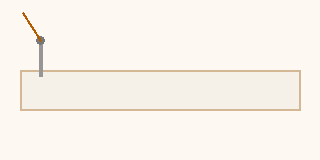

अध्याय १ · औज़ार और सामग्री
Chapter 1 · Tools & Materials
सिलाई के ज़रूरी औज़ार
Essential Tailoring Tools
Essential Tailoring Tools
हर पेशेवर दर्जी इन्हें जानता है। इन्हें पहचानना सीखें।
Every professional tailor knows these. Learn to identify each one.
नीचे सही जवाब चुनें — चित्र अपडेट होगा ✨
Choose an answer below — the illustration updates ✨
कपड़े पर निशान लगाने के लिए क्या इस्तेमाल होता है?
What is used to mark measurements on fabric?
What is used to mark measurements on fabric?
अध्याय २ · कपड़े के प्रकार
Chapter 2 · Fabric Types
कपड़े की पहचान करें
Identifying Fabrics
Identify Fabrics by Touch & Look
शुरुआती दर्जी के लिए सबसे ज़रूरी है — कपड़े को देखकर और छूकर पहचानना।
The most important skill for a beginner tailor — recognising fabric by sight and touch.
मुख्य अवधारणाएं
Key Concepts
Light, breathable, easy to wash. Best for summer wear.
सिलाई टिप: सुई नंबर 11–14 इस्तेमाल करें।
Use needle size 11–14.
Expensive, slippery — for experienced tailors.
टिप: सिलाई से पहले पिन ज़रूर लगाएं।
Always pin before stitching.
Popular for sarees and dupattas.
टिप: फ्रेंच सीम इस्तेमाल करें।
Use French seam to hide raw edges.
Cheap, durable, quick-drying.
टिप: कम तापमान पर इस्त्री करें।
Iron on low heat only.
शुरुआती दर्जी के लिए सबसे अच्छा कपड़ा कौन सा है?
Which fabric is best for a beginner tailor?
Which fabric is best for a beginner tailor?
अध्याय ३ · बुनावट और धागे
Chapter 3 · Grain & Weave
ताना, बाना और सेल्वेज
Warp, Weft & Selvedge
कपड़े की बुनावट समझे बिना सही कटाई संभव नहीं।
Without understanding weave direction, correct cutting is impossible.
रिक्त स्थान भरें — खड़े धागों को ( ) कहते हैं।
Fill the blank — vertical threads are called
अध्याय ४ · सिलाई मशीनें
Chapter 4 · Sewing Machines
पैर-चालित बनाम मिनी मशीन
Treadle vs Mini Sewing Machine
सिलाई की गति — एनिमेशनStitching motion — animation

पैर-चालित मशीन में बिजली की ज़रूरत क्यों नहीं होती?
Why does a treadle machine not need electricity?
Why does a treadle machine not need electricity?
अध्याय ५ · सीम और बनावट
Chapter 5 · Seams & Stitches
सीम, डार्ट और हेम
Seam, Dart & Hem
ये सिलाई की बुनियादी इकाइयां हैं।
These are the fundamental units of tailoring.
Joining two fabric pieces in a straight line.
भत्ता: आमतौर पर 1–1.5 इंच
Seam allowance: usually 1–1.5 inches
A folded tuck that shapes the garment to the body.
उदाहरण: ब्लाउज की पीठ पर डार्ट
Example: back darts on a blouse
Sewn twice to enclose raw edges — ideal for georgette & silk.
Folding and stitching the bottom edge of a garment.
आम हेम: 1–2 इंच | Typical: 1–2 inches
डार्ट का मुख्य उद्देश्य क्या है?
What is the main purpose of a dart?
What is the main purpose of a dart?
अध्याय ६ · शरीर के नाप
Chapter 6 · Body Measurements
नाप लेना और भत्ता
Taking Measurements & Ease Allowance
मिलान खेल — हिंदी नाम को अंग्रेज़ी से मिलाएं
Match Game — drag Hindi to the correct English
शाबाश! पाठ पूरा हुआ! 🎊
Lesson Complete! 🎊
आपने सिलाई और कपड़े की बुनियादी जानकारी हासिल कर ली।
अब मशीन पर बैठ कर अभ्यास शुरू करें!
You have covered the basics of tailoring and fabric.
Now sit at the machine and start practising!